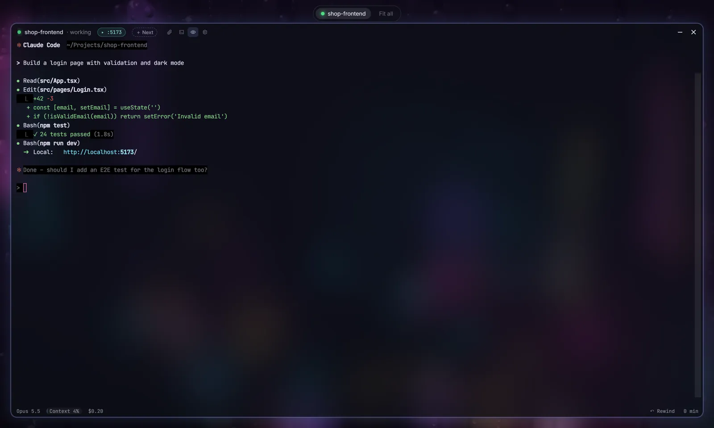
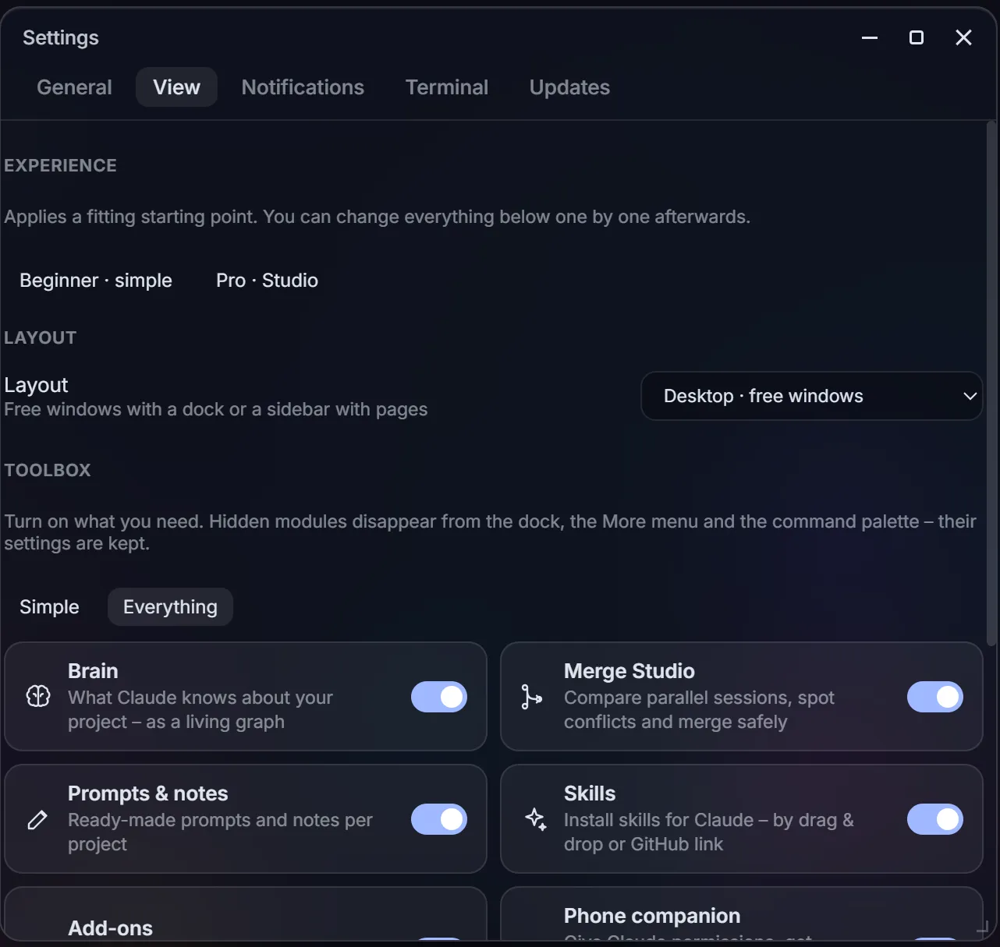
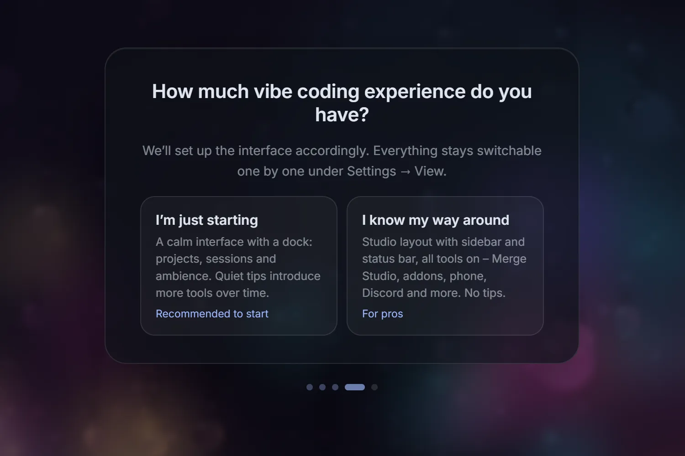

VibeDesk/Calm by default
A desk that stays quiet until you need more.
VibeDesk starts small and grows with what you do. Tools appear when they have something to do, the dock steps back while you type, and zen mode leaves only Claude and the rain.
Zen mode
Only Claude and the rain.
Press Ctrl + . or the eye in the terminal's title bar. The current session fills the screen, other sessions wait as small pills at the top, and the dock only comes back when your mouse touches the bottom edge.

Just ask Claude
“Sort my windows.”
VibeDesk gives Claude its own tools for the desk. Say “sort my windows”, “zen mode on”, “Tokyo scene with more rain”, “lofi quieter”, “open the Git window” or “switch to the Studio layout” – and Claude does it. It can arrange and tidy windows, change scene, rain and blur, lofi radio and rain sound, open windows, switch the layout and terminal colors, start the focus timer and leave you a short note (“build done”). It works in every session, even with the brain switched off.
Settings → View
Switch off what you don't use.
The toolbox lists every module – brain, Merge Studio, prompts & notes, skills, addons, phone companion, Vibe Lounge, Discord and streamer mode. Hidden modules disappear from the dock, the More menu and the command palette; their settings are kept.
- “Simple” or “Everything” with one click, or each module on its own.
- The same page holds your experience level, the layout and which inspector tabs you see.

First start
Beginner or pro – you choose.
The setup asks how much vibe coding experience you have. Beginners get a calm desktop with a dock and quiet tips that introduce more tools over time. Pros get the Studio layout with sidebar, status bar and every tool switched on.
- A short click tour shows where things are. Start it again any time from the command palette (“Start the tour”) or the settings.
- Everything stays switchable one by one.

Small things
Quiet on purpose.
A dock that grows
Git appears once Claude changed files, the brain once Claude uses it, the preview with a running dev server. Icons that appeared stay, so nothing jumps around.
Quiet tips
Instead of new icons popping up silently, VibeDesk says once when something fits – and you can turn tips off.
Fades while you type
The dock dims while you write in the terminal.
Tidy up
One palette command sends leftover windows to the dock. Optionally windows go there by themselves after 15 minutes unused.
Windows that snap
Drag a window and it snaps to other windows, the screen edge, halves, thirds and quarters. Hold Alt to place it freely.
Updates your way
Updates install in the background on the next start – or switch that off and VibeDesk only tells you about new versions.
Let Claude work.
Step in when it counts.
Free for Windows 10 and 11.